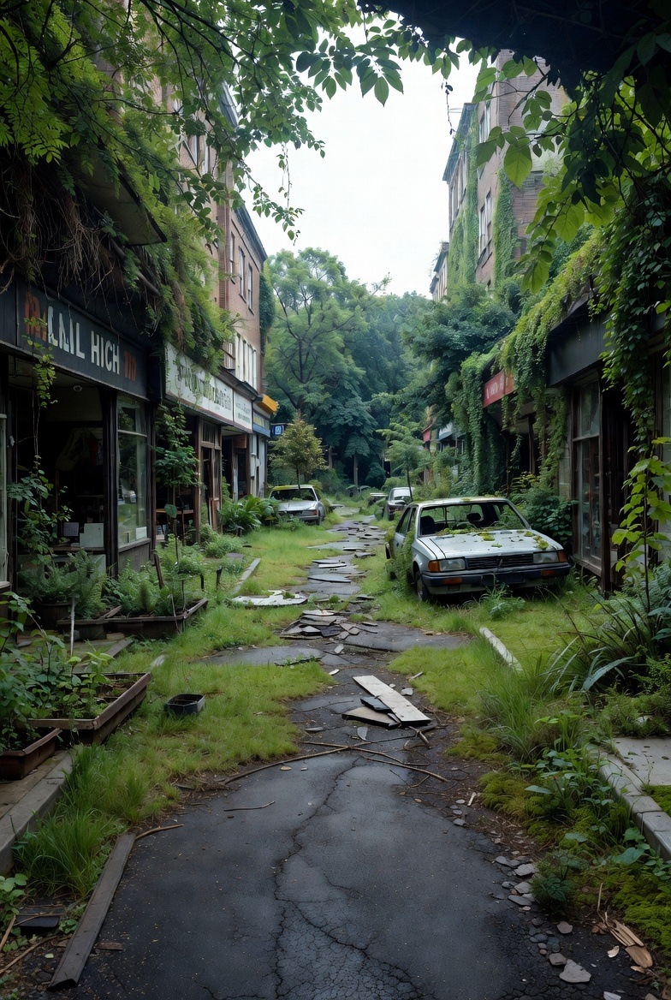

01
Chapter 01 — Urban Decay
The Crumbling
Metropolis
Steel and concrete yielded first. Within decades, the towers that once defined skylines began to fracture — their windows hollow eyes staring into a changed sky.
Chapter 01 — Urban Decay
Steel and concrete yielded first. Within decades, the towers that once defined skylines began to fracture — their windows hollow eyes staring into a changed sky.
Most reinforced concrete fails within half a century once maintenance stops completely.
Water ingress alone accounts for the majority of post-abandonment structural failure.
Frost cycles and root growth fracture asphalt within a single generation.
The last mechanical sound fades within months. The city breathes differently now.
Observation 01
The towers did not fall all at once. They came apart piece by piece — first the glass, then the cladding, then the steel beneath. Water found every crack. Frost prised every joint. What once took decades to build dissolved in the same time.
The skyline, once a declaration of human ambition, became a jagged silhouette of rust and shadow — beautiful in its ruination, terrible in what it implied.
Observation 02
At ground level, the transformation was slower and more intimate. Shop fronts gaped open. Cars became planter boxes. The tarmac lifted in great slabs as the roots of a thousand saplings found their way beneath.
Within a century, what had been a high street was indistinguishable from a forest path — save for the occasional glimpse of ceramic tile or faded signage still legible beneath the moss.

Urban decay is not destruction — it is transformation. The structures we built were never permanent; they required constant intervention to maintain the illusion of solidity. Remove the human hand and the entropy begins immediately.
Research into real-world examples — from the abandoned city of Pripyat to the ruins of Detroit's industrial heart — shows that nature does not wait. Within years, not decades, the biological world colonises every available surface. Buildings become terraria. Roads become rivers.
The Last of Us imagines overgrown American cities with uncanny specificity. Metro Exodus traces the ruins of Moscow outward into a contaminated wilderness. These works understand that ruins are not endings — they are beginnings of something else.